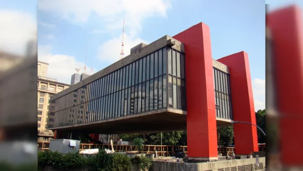
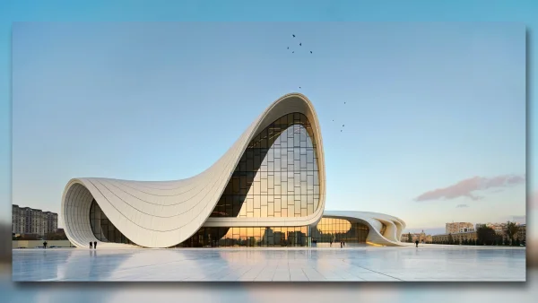
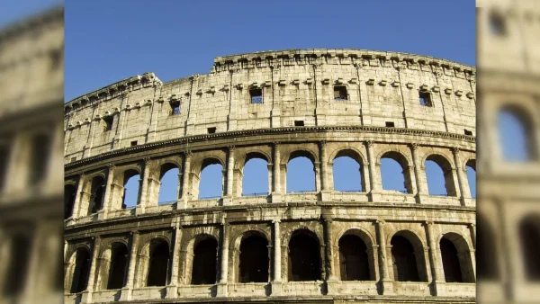
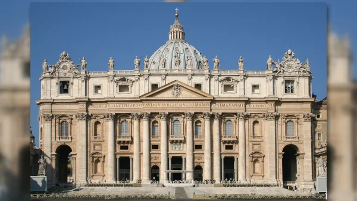
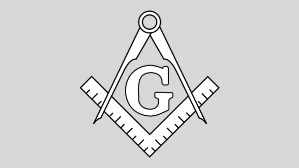

Arquitetura é a arte e técnica de projetar uma edificação ou um ambiente de uma construção. É o processo artístico e técnico que envolve a elaboração de espaços organizados e criativos para abrigar diferentes tipos de atividades humanas.das partes ou dos elementos que compõem os edifícios ou os espaços urbanos, em geral.
Essa arte é composta pelo conjunto dos princípios, normas, técnicas e materiais utilizados pelo arquiteto, para criar um espaço arquitetônico. O arquiteto é o profissional legalmente habilitado para o exercício da arquitetura.
Etimologicamente, a palavra arquitetura se originou a partir do grego arkhitekton, junção dos termos arkhé ("principal") e tékhton ("construtor" ou "construção"). No entanto, antes de chegar à Língua Portuguesa a palavra foi absorvida pelo latim, architectus.
Estilos de arquitetura
Cada civilização, em diferentes épocas da história, construiu projetos arquitetônicos com base em elementos próprios. A inspiração para essas particularidades está na cultura, tradição e modo de vida das respectivas sociedades.
Arquitetura moderna
O Modernismo foi um conjunto de movimentos artístico-culturais que emergiu no começo do século XX e que também influenciou o estilo arquitetônico da época. As construções eram inspiradas no espírito da Revolução Industrial que atingia o seu auge. Os arquitetos davam preferência ao uso do ferro, vidro e concreto armado como principais materiais de suas obras.
Arquitetura contemporânea
 Muita gente confunde o estilo arquitetônico moderno com o contemporâneo, principalmente por achar que o termo "moderno" é sinônimo de contemporaneidade. Na realidade, ambos são diferentes e retratam períodos distintos.Arquitetura romana
Com influência da arquitetura dos gregos e etruscos, a romana faz parte da fase clássica dos estilos arquitetônicos. Os arquitetos romanos viam a necessidade de expressar através de suas obras uma idealização de beleza, mas também representar a realidade vivida pelos cidadãos.Arquitetura grega
AcrópoleA arquitetura grega, famosa por suas grandes obras, alcançou seu máximo no governo de Péricles, sobretudo em Atenas.
Os grandes nomes da arquitetura grega foram Ictínio e Calícrates, responsáveis pela construção de vários monumentos. Os templos eram as principais obras, construídos em pedra talhada, de tal modo ajustados que dispensavam argamassa.
Uma das principais características deste estilo é o uso de colunas. Estas estavam divididas em três modelos arquitetônicos distintos, seja pela forma e feitio:
Arquitetura Grega
Basílica de São PedroTeve maior representatividade entre os séculos XV e XVI, período em que a sociedade europeia sofria intensas transformações ideológicas.
A arquitetura renascentista se opunha ao estilo gótico (considerava muito feio). Por outro lado, valorizava aspectos que remetiam aos conceitos do antropocentrismo, a perfeição simétrica com proporções rigorosas e o "Homem-Razão".
Entre algumas das principais características estéticas da arquitetura renascentista, destaque para:
Arquitetura Sustentavel
Considerada uma vertente forte dentro da arquitetura contemporânea, o estilo arquitetônico sustentável começou a se popularizar entre as décadas de 1980 e 1990.
Como o nome sugere, os arquitetos buscam garantir a Sustentabilidade do meio ambiente, fazendo com que as construções não provoquem impactos negativos na natureza.
Para isso, existem alguns princípios que caracterizam a arquitetura sustentável, como:
Simbolo da Arquitetura
O símbolo é formado a partir da união de um esquadro (espécie de régua usada para desenhos com linhas retas precisas) e um compasso. A composição da imagem cria uma representação do Céu e da Terra.A posição do compasso remete à abóbada celeste, enquanto que o esquadro simboliza a Terra e todas as coisas nela fixas.
Oque faz o Arquiteto
O arquiteto é o profissional responsável por planejar, organizar e coordenar a construção de edifícios, conjugando aspectos relacionados ao conforto, funcionalidade e estética do imóvel.
É o arquiteto quem constrói a planta para uma obra, assim como escolhe os materiais e a disposição de toda a construção. Para isso, o profissional precisa levar em consideração a acústica, a manutenção, a iluminação, a ventilação, o impacto ambiental, entre outros fatores que poderão influenciar na qualidade final da construção.
Ao contrário do engenheiro civil, por exemplo, o trabalho do arquiteto é direcionado para a resolução estética e funcional da obra. Por outro lado, a engenharia se encarrega de solucionar questões estruturais e técnicas do projeto, assim como dos materiais a serem utilizados